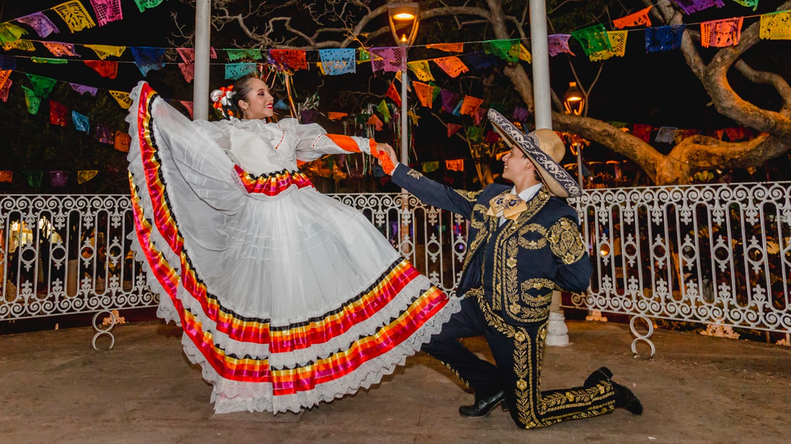
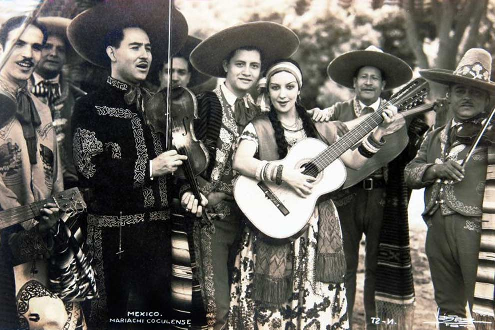
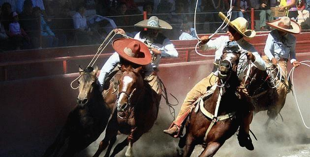

El Jarabe Tapatío es un arte popular mexicano que recuerda el sentido de identidad nacional favorecida por los esfuerzos de los post revolucionarios para unificar y celebrar sus tradiciones y cultura. El encanto y la gracia de esta danza, junto con el color vivo de la ropa, que ofrecen a los espectadores un collage vertiginoso de vitalidad y brillo, han capturado los corazones de los amantes del arte popular en México y en todo el mundo.
La danza celebra el cortejo romántico. Por lo general la interpretan un hombre y una mujer, donde el hombre parece invitar a su pareja a un mundo de afecto íntimo. Al principio, la mujer rechaza los avances de su pareja, pero se rinde a su persistencia mientras los dos bailan, sólo para rechazarlo de nuevo cuando sus señales positivas inspiran un vértigo excesivo en el pretendiente. Durante el baile, sombrero del hombre se coloca en el suelo, y después de animados saltos, deslizamientos y taconeos en torno al sombrero, la mujer se inclina para recogerlo, y en ese momento el hombre pasa la pierna por encima de su cabeza. Ni que decir tiene que la coordinación y una cuidadosa coreografía son fundamentales. A continuación, el baile se cierra cuando ella sostiene el sombrero y las caras ambos bailarines desaparecen detrás de él, dejando al público cautivado por la idea de que los dos están finalmente confirmando el interés romántico mutuo, sellándolo con un beso.
La danza del sombrero mexicano y la ropa de la bailarina se han convertido en símbolos nacionales e internacionales fácilmente reconocibles de la herencia mexicana. Las mujeres usan un amplio conjunto de falda y blusa con una decoración colorida, al estilo de lo que se llama China Poblana. El origen del nombre y el estilo de la falda ha inspirado leyendas curiosas, entre ellas el de una hermosa princesa del siglo XVII de la India llamada Mirra que fue secuestrada, llevada a las Filipinas y enviada a México para ser vendida allí como esclava. Su ropa exótica y vibrante causó tal impresión, que las mujeres en México empezaron a copiar el estilo y la adaptaron a los gustos populares indígenas. Los hombres usan tradicionalmente un traje negro con bordados metálicos llamado charro. Las perneras de los pantalones del hombre están jalonadas con botones de plata que resaltan sus llamativos movimientos y sus taconeos. El origen del nombre de la propia danza también ha suscitado cierta controversia. La palabra árabe Xarab significa mezcla de hierbas. El nombre puede referirse a la mezcla de influencias que creó este estilo de baile, como el vals, la polka y las danzas indígenas americanas.
El mariachi es un género de la música de México. Por extensión, se conoce también como mariachi13 a los músicos dedicados a este género —nombrados también como mariacheros— y a los conjuntos musicales en sus expresiones conocidas como mariachi tradicional y mariachi moderno.14 En noviembre de 2011 la Unesco inscribió a El Mariachi, música de cuerdas, canto y trompeta como integrante de la Lista Representativa del Patrimonio Cultural Inmaterial de la Humanidad.15 El mariachi también forma parte de la música regional mexicana
El mariachi cuenta con dos manifestaciones reconocibles:16 el denominado tradicional, que conserva el atuendo típico campesino y la instrumentación con las cuales se desarrolló desde la época novo-hispana; y el moderno, basado en el primero —de mayor medida en la variante regional de Cocula como influencia prototípica17— pero que se modificó sustancialmente a partir de la década de los treinta hasta convertirse en una manifestación propia. A mediados del siglo xx este género musical alcanzó una difusión nacional en su país de origen gracias a su aceptación en el gusto popular mediante su incursión en la radio, la televisión, el cine y la industria discográfica, para convertirse con el paso de los años en popular en muchos países del mundo. La música y vestimenta del mariachi moderno son las más famosas en todo el mundo.
Su música se acostumbra en México en fiestas públicas tales como el día de las Madres o el de la Virgen de Guadalupe (12 de diciembre), el aniversario de la independencia (16 de septiembre), reuniones familiares, fiestas o serenatas. Entre algunos de los autores o intérpretes de canciones para mariachi más importantes están: Lucha Reyes, Jorge Negrete, Antonio Aguilar, Pedro Infante, Cuco Sánchez, Javier Solís, Miguel Aceves Mejía, José Alfredo Jiménez, Aída Cuevas, Lucha Villa, Juan Gabriel, Tomás Méndez, Lola Beltrán, Amalia Mendoza, María de Lourdes, Rubén Fuentes, Gilberto Parra Paz, Vicente Fernández, Beatriz Adriana y Manuel Esperón. La vestimenta tradicional del mariachi moderno es el traje de charro.
La Charrería es motivo de orgullo y tradición de la cultura mexicana. Su práctica combina la equitación con diversas formas de jaripeo, actividades ecuestres y formas tradicionales de la ganadería. En México, la Charrería es considerada como deporte nacional por excelencia desde que fue registrada en la Comisión Nacional del Deporte. Se realiza en "Lienzos Charros" que son instalaciones especialmente diseñadas para su práctica junto con un caballo y un jinete denominado “charro”.
Tiene sus raíces en los estados de Hidalgo y Jalisco, convirtiéndose en una de las tradiciones mexicanas más representativas de nuestra cultura. Como escuela Hípica, se origina en los llanos de Apán en Hidalgo y tras pasar la Revolución mexicana a principios del Siglo XX, se le considera como Deporte Nacional cuando los antiguos terratenientes emigran a ciudades como la Ciudad de México y Guadalajara, donde se comienzan organizar en asociaciones que gradualmente se extendieron por todo el país dando lugar a la Charrería Organizada
Los orígenes del traje de charro, provienen de la misma actividad en el campo, desde que a los
nativos de la Nueva España, se les permitió montar a caballo y realizar las faenas propias de
sus actividades.
Traje de faena: Se compone de sombrero de palma, camisa sin cuello, saco de tela o
gamuza sin adornos. Pantalón sin bolsa trasera, botines de piel y el general se utilizan
colores en tonalidades café o gris, corbata discreta de moño colgante estilo mariposa.
Traje de media gala: Sombrero de fieltro, camisa de cuello volteado, corbata elegante
haciendo juego con el traje, chaqueta de gamuza o casimir con tres presillas en cada
manga y broche lujoso en el pecho. Pantalón con botonadura de plata en cada lado.
Cinturón con adornos de acuerdo a los colores y materiales de todo el conjunto.
Traje de gala: De color gris, azul obscuro o negro, con sombrero galoneado y
botonadura de plata desde la cintura hasta el tobillo, exige adornos discretos pero
finos, pistola con funda bordada. Camisa de cuello volteado y chaqueta del mismo
material. Corbata discreta con bordados finos de preferencia plateados haciendo juego
con la botonadura y el sombrero.